Creació i Administració d’Unitats Organitzatives
Unitats Organitzatives (UO) a Active Directory
Les Unitats Organitzatives (UO) són contenidors lògics dins d’un domini d’Active Directory. Serveixen per organitzar i agrupar objectes com usuaris, grups, equips o altres UO.
A diferència de la carpeta "Users", les UO permeten una administració més avançada i personalitzada.
Avantatges de les UO
- Aplicació de polítiques específiques a grups d’usuaris o equips.
- Delegació d’administració sense accés complet al domini.
- Millor organització segons departaments, funcions o ubicacions.
- Control de seguretat més detallat i efectiu.
Crear una UO
- Obrir Usuaris i equips d’Active Directory.
- Clic dret sobre el domini → Nou > Unitat organitzativa.
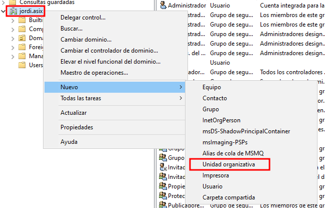
També es poden crear subunitats organitzatives dins d'una UO principal, ideal per a una segmentació més precisa.
Exemple:
- UO principal:
principal - SubUO:
informatics
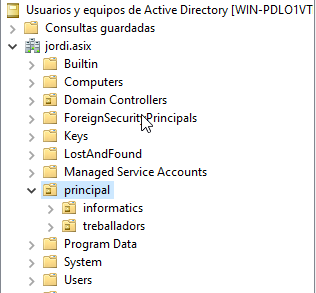
Creació d'usuaris i grups dins d'una UO
Es poden crear grups, com:
PermesRestringit
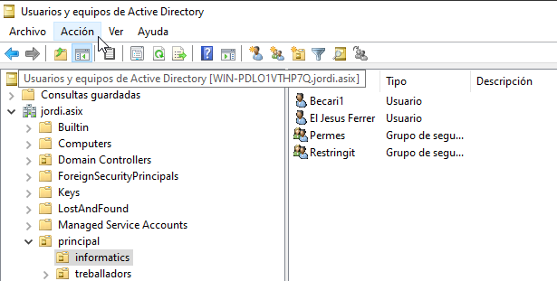
Després, s’assignen usuaris a cadascun. Això permet aplicar polítiques diferenciades segons el grup.
Configuració de GPOs (Group Policy Objects)
Què és una GPO?
Una GPO permet configurar entorns d'usuari i equip de manera centralitzada. Controla aspectes com:
- Configuració del sistema operatiu
- Restriccions de seguretat
- Scripts d’inici de sessió
- Altres funcionalitats crítiques
Desactivar l'accés a la línia de comandaments (CMD) via GPO
Procediment:
- Obrir gpmc.msc (Consola de Gestió de Polítiques de Grup).
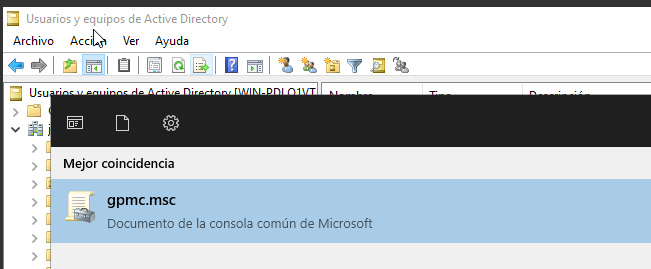
- Crear o editar una GPO:
- Vincular-la a la UO o domini.
- Assignar un nom (ex:
Desactivar CMD).
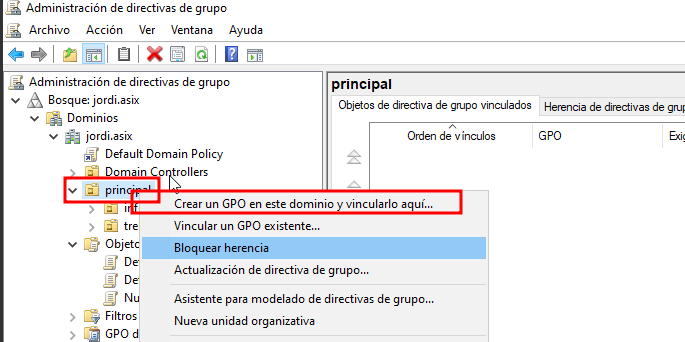
- Editar la GPO:
- Anar a
Configuració de l'usuari > Polítiques > Plantilles administratives > Sistema. - Activar la política: "Impedir l'accés al símbol del sistema".
També pots activar la política: "Impedir l'accés a l'Editor del Registre".
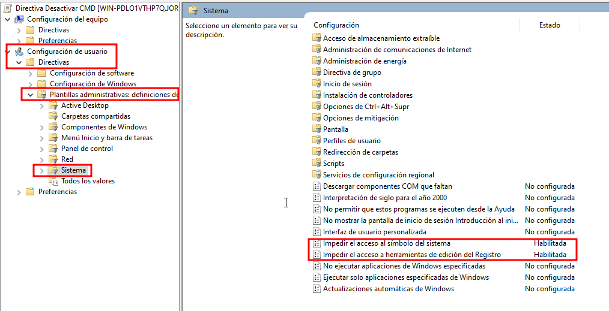
Comprovem que funciona
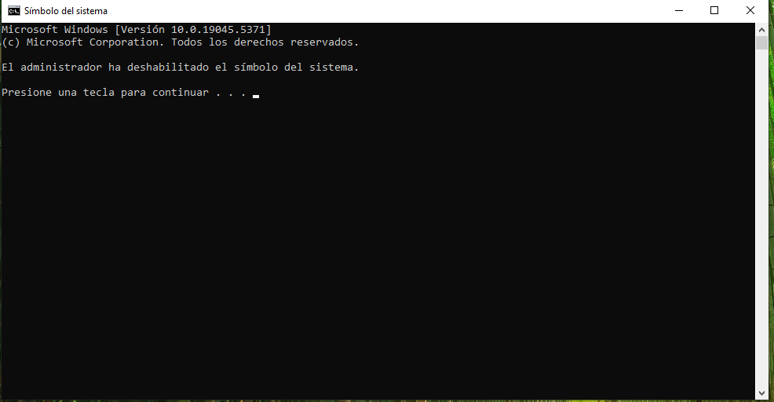
Modificació de la Política de Contrasenyes al Domini
Accedir a la configuració
- Obrir gpmc.msc.
- Localitzar la política Default Domain Policy o una política personalitzada.
- Editar la política.
Ruta a seguir:
Configuració de l’equip > Configuració de Windows > Configuració de seguretat > Polítiques de compte > Política de contrasenya
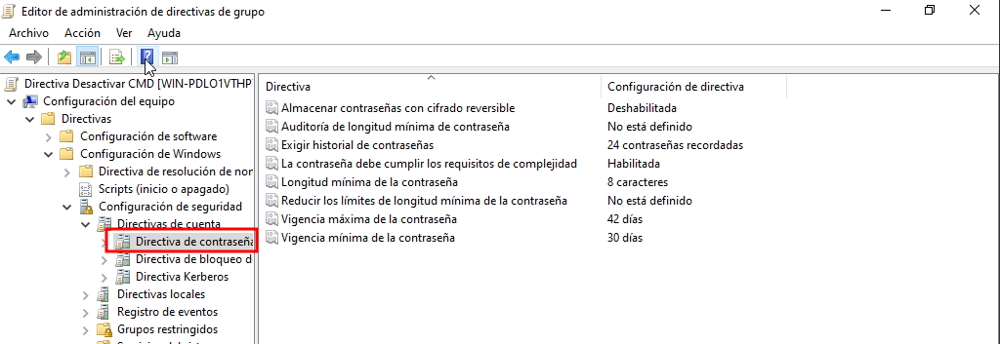
Opcions habituals a configurar
- Longitud mínima de la contrasenya.
- Complexitat (majúscules, minúscules, números i símbols).
- Caducitat (temps de validesa).
- Historial de contrasenyes.
Un cop fet, actualitzar amb:
gpupdate /force
Prova de la Política de Contrasenya
Després d’aplicar la política, podem:
- Forçar el canvi de contrasenya a un usuari.
- Validar si es compleixen les normes de complexitat i longitud.
Si no es compleixen els requisits, apareixerà un error.
Si compleixen, el canvi es validarà correctament.
Compartir una Carpeta o Unitat de Xarxa via GPO
Procediment
- Crear una carpeta compartida a un servidor:
- Donar permisos de compartició adequats (
LecturaoControl totalsegons convingui). - Obrir la Consola de Gestió de Polítiques de Grup (gpmc.msc).
- Crear una nova GPO o editar una existent vinculada a la UO d'interès.
- Configurar el "Drive Mapping":
- Anar a
Configuració d'usuari > Preferències > Configuració de Windows > Units de xarxa. - Botó dret → Nou > Unitat de Xarxa.
- Configurar la ruta de la carpeta compartida (ex:
\\servidor\carpeta). - Assignar una lletra d'unitat (ex:
Z:).
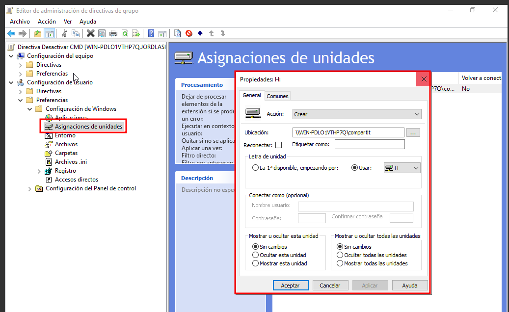
Resultat
Quan els usuaris inicien sessió, automàticament veuran la carpeta com una nova unitat de xarxa sota "Aquest Equip".
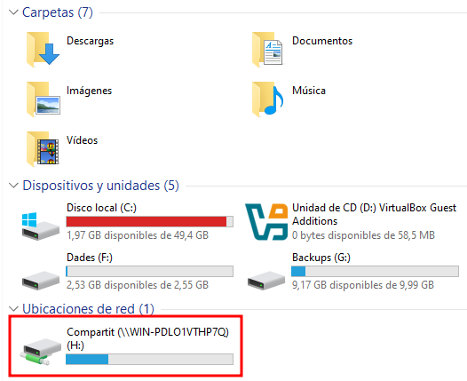
Limitació d'accés per a usuaris externs al domini
Per assegurar que només els usuaris que formen part del domini tinguin accés als equips d'aquest domini, pots establir una Política de Grup (GPO) que reguli qui pot iniciar sessió localment.
Aquesta mesura és fonamental per prevenir l'accés no autoritzat mitjançant comptes locals o externs, i resulta especialment útil en entorns corporatius o educatius on es vol mantenir un control estricte sobre qui pot accedir als equips.
Configuració de la GPO
- Accedeix a la consola
gpmc.mscal servidor de domini i edita o crea una GPO vinculada a la Unitat Organitzativa (OU) que conté els equips als quals vols aplicar aquesta restricció. - Un cop dins, segueix el camí següent:
Configuració de l’equip → Configuració de Windows → Configuració de seguretat → Polítiques locals → Assignació de drets d'usuari → Permetre l'inici de sessió local
- Afegeix el grup següent a la configuració:
DOMINI\Usuarios del dominio
Exemple:
VitaliyAD\Usuarios del dominio
Això garantirà que només els usuaris autenticats al domini puguin iniciar sessió als equips.
I si un usuari local intenta accedir?
En el cas que un usuari local o extern intenti iniciar sessió, se li mostrarà un missatge d'error indicant que no té els permisos necessaris per iniciar sessió localment.
Aquesta mesura ajuda a prevenir intents d'accés amb comptes com .\usuari, .\Administrador, o altres comptes no autoritzats que no formen part del domini.
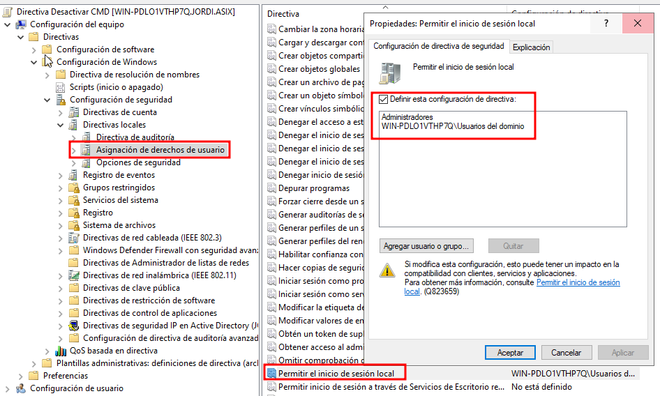
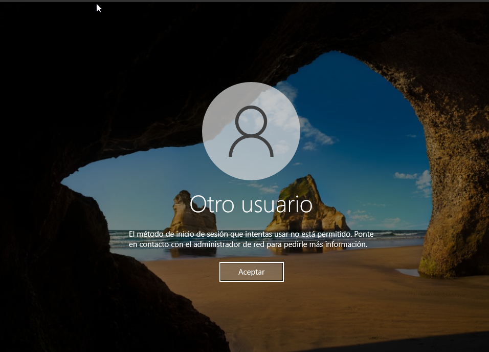